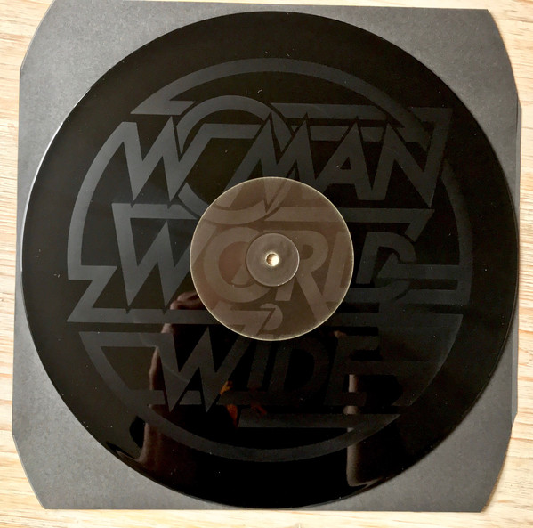

The
Slow Rush de Tame Impala (2020)
Este
disco es bastante interesante, pues además de que fue sacado el 14 de
febrero de 2020, es un disco que junta varios generos, y varios
instrumentos además de tecnicas: Kevin Parker (el que hizo el album)
emplea la distorsion de su voz, el uso de los teclados que ofrecen un
sonido electrico, pero además emplea el sonido del piano que te
devuelve a un sonido menos electronico, y más cosas que es mejor
descubrirlas si se escucha el disco. En mi opinión: un 8/10, pues está
muy bien, porque tiene bastantes versiones (vinilos con distintos
colores, ediciones que ofrecen más canciones, etc.) pero creo que hay
canciones que se hacen un poco
toston.
El
original es de color negro, pero este es la versión del 40
Unknown Pleasures de Joy
Division (1979)
aniversario de la banda.
Un
disco bastante antiguo, y para ser más exacto de junio del 1979, es de
una banda que tuvo una duracion bastante corta. El disco, de genero
punk tiene
canciones que son bastante oscuras, pero que a la vez sientan bien.
Emplean bastante el sonido del bajo, además de que en casi todas las
canciones se puede percibir perfectamente como suena. Ha recibido
bastantes versiones, como una en la que el fondo se hace blanco. Esta
versión es la del 40 aniversario de la banda. En mi opinión: un 8,5/10,
pues me encanta
bastante el sonido del bajo, pero creo que para ser un disco
punk necesitaria sonar menos
depresivo, aunque... considerando por donde pasaba el cantante,
creo que ha hecho un buen trabajo.
El Copper Nitrate tan famoso.
Chunky Shrapnel de los
King Gizzard & The Lizard Wizard (2020)
Chunky
Shrapnel es un recopilatorio de canciones de la banda australiana King
Gizzard... que aunque tengan lugar en distintos directos de distintas
partes del mundo (como Madrid, Luxemburgo, etc) parece que todas tienen
lugar en el mismo sitio. Ademas, metieron tres canciones que no forman
parte de los directos, pues como este disco salió cuando ocurrían los
confinamientos y la pandemia del coronavirus, quisieron añadirlas pues
pensaban que hacian falta, como la canción:
Quarantine,
que son una serie de sonidos hechos con un teclado, que refleja la
soledad y tristeza que produjo a las personas el confinamiento. En mi
opinión: 9,5/10, pues se lo curraron bastante, además de que sacaron
tres versiones del disco (una de ellas, la
Copper Nitrate
[Nitratro de Cobre] se agotó tras pasar 3 minutos de que saliera a la
venta. Las demas se agotaron en 1 hora) es una recopilación bastante
buena que junta muchas canciones de la banda.

Woman de Justice (2016) [Y
a la derecha Woman Worlwide
(2018)]
Este
disco es uno de los que más me impacto cuando lo escuche, pues Justice
siempre sabe como hacer que sus discos suenen bastante fuertes, pero a
la vez que se disfruten mucho. Sus canciones utilizan mucho los sonidos
generados por instrumentos electricos, como son las baterias electricas
o los teclados. Tiene una versión, que se comercializa como los
remixes
de este disco, y se llama:
WOMAN
WORLWIDE
o en resumidas cuentas WWW (justo como la
World Wide Web), en el que
Justice ha remezclado las canciones de muchos de sus discos en honor a
su decimo aniversario. Curiosidad del disco: Las canciones tiene muy
pocas transiciones, es decir, podríamos decir que en realidad son un
par de canciones, aunque el disco tenga 15 canciones. En mi opinión:
8,5/10. Me encanta revisitarlo de
vez en cuando, pero prefiero los
remixes,
pues suenan mucho mejor, y ademas le dan un giro a todas las canciones.

Igor de
Tyler, The Creator (2019)
De
mi coleccion de discos que tengo comprados, creo que es mi favorito.
Tyler se transforma en Igor, un hombre que nos cuenta como vive el amor
desde dos puntos de vista: el de estar en una relacion con la chica que
te gusta, y el de que la chica te deje. Gracias a esto se nota como el
disco va perdiendo poder contra más pasan las canciones, para acabar
con
Gone
Gone / Thank you que
te agradece que te hayas quedado a escuchar el disco y a seguir el
viaje de Igor desde esos dos puntos de vista. La primera vez que lo
escuche debo decir que me impresiono mucho, pues nunca había visto un
disco que evolucionara junto con el personaje. En mi opinión: 9,75/10.
Hay una cancion que no me gusta mucho como queda dentro del disco, pues
considero que es demasiado... ¿amorosa?. Es decir, la canción se llama
Are we still friends?
en la que parece que esta suplicando que no lo dejen solo, y eso no es
que me guste mucho, pero, el resto del disco es precioso.
CRAWLER de IDLES (2021)
Un disco muy esperado de la banda inglesa IDLES. Recuperan el
punk que parece que había
desaparecido, y lo aprovecha para soltar todo lo que piensa y siente el
cantante de la banda:
Joe Talbot
(sobre todo en la primera canción, titulada
MTT
420 RR
que habla sobre el accidente que casi le cuesta la vida, porque tenía
una adicción a sustancias... bueno, sumado a esto, una compañera suya
había muerto, y quería hacer honor a que el estuviera vivo después de
sufrir tal accidente y que hubiera visto su vida pasar delante de sus
ojos). Todas las canciones están genial, pero me pasa como con
Igor, y es que hay
una que sobra: "
The
Beachland Ballroom".
Es una canción para bailar cuando estás en un salón con una chica.
Pero, si el disco es punk, a que metes una canción así para luego
seguir con el punk. No se, no lo entiendo. En mi opinión: 9/10.

The 3-D Catalogue de Kraftwerk (2017)
Digamos que esto no es un disco, sino
8 discos que recorren todo el
recorrido de Kraftwerk durante todos los años que hicieron música. Cada
disco (en la imagen solo pongo el octavo) representa un disco de la
banda que marco una gran diferencia:
Autobahn, Radioactivity, Trans Europa Express, The Man Machine, Computer World, Techno Pop, The Mix y Tour de France. Cada uno con un sonido
tecno
y con sus peculiaridades, como es el caso de
Radioactivity, que en los
directos de este disco, ponían datos escalofriantes acerca de los
problemas de la radioactividad. Pero en sí, y desde mi punto de vista,
le doy un 8,75/10, porque estan bien los discos, y los directos son
flipantes, porque ver a 5 hombres con sus ordenadores y teclados tocar
las canciones sin problemas es alucinante, sobre todo si te digo que
los integrantes (el creador de la banda,
Florian Schneider murió en el
2020 a sus 73 años) tienen más de 70 años y siguen tocando igual de
bien que cuando eran unos chavales.
Butterfly 3000 [O Mariposa 3000 de los King Gizzard & The Lizard] (2021)
Disco
que desde mi punto de vista es bastante psicodelico (y mira que los
Gizzard son bastante raritos) pero que esta bastante bien. Es un disco
que gira en torno a la vida y sobre todo a lo ambientado a las
mariposas. Las canciones están bastante bien, excepto por una que la
odio con toda mi alma: "
2.02 Killer Year".
Desde un vídeo que asusta por lo deformados que se ven los personajes,
a una voz demasiado aguda; es una canción que no puedo con ella. Otra
cosa, este disco tiene varias versiones en distintos idiomas (y no,
solo cambia el paquete en el que viene el disco):
Japonés, alemán,
chino, ruso, turco, neerlandés, tailandés indio, español (malamente
traducido) y
francés. En mi opinión: 8/10. Esta bien cuando lo escuchas
por primera vez, pero si lo escuchas muchas veces, se te empieza a
hacer pesado. Lo que mas me gustó fueron los videos que subieron.
Tienes todos los vídeos (e incluso algún fan de la banda ha hecho una
película recopilando todos los vídeos y añadiendo transiciones) en su
canal de YouTube.